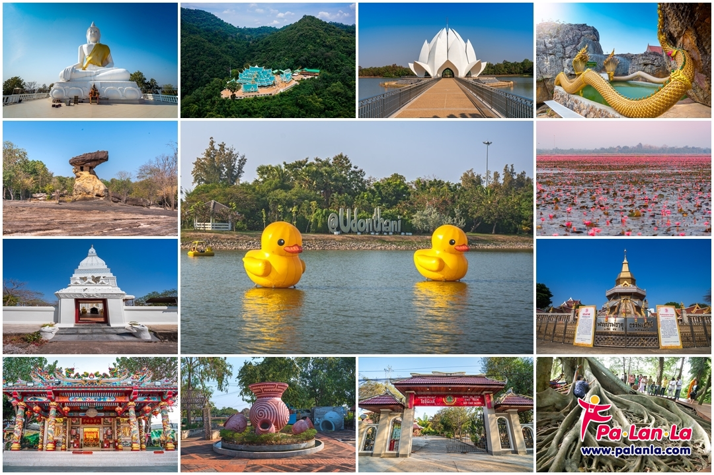

Landmark UdonThani
Landmark UdonThani
Landmark UdonThani
Landmark UdonThani
ที่เที่ยวแลนด์มาร์คสำคัญในอุดรธานี
สถานที่ท่องเที่ยวจังหวัดอุดรธานีที่มีความสวยงามอเมซิ่ง จนเคยได้รับการจัดอันดับจาก CNN ให้เป็น 1 ใน 5 ทะเลสาบสุดอัศจรรย์ของโลกกันเลยทีเดียว เพราะฉะนั้นจึงมั่นใจได้เลยว่าทะเลสาบแห่งนี้จะสวยงามจนน่าแวะไปสักครั้ง ซึ่งทะเลบัวแดงในบึงหนองหาน ที่ตั้งอยู่ในอำเภอกุมภวาปีแห่งนี้ จะมีช่วงพีคอยู่ในช่วงเดือนธันวาคม–กุมภาพันธ์ ของแต่ละปี แต่ขอบอกเลยว่ากลางมกราคมถึงต้นกุมภาพันธ์นี่แหละที่สวยพีคสุดขีด ส่วนถ้ามาท่องเที่ยวในช่วงเดือนธันวาคม หรือมกราคม ก็จะได้สัมผัสกับอากาศเย็นแทน แนะนำว่าช่วงเวลาที่ฟินที่สุด คือช่วงเช้ามืดถึงสาย ๆ เพราะอากาศดี แดดไม่ร้อน ถ่ายรูปออกมายังไงแสงก็สวย

ใครผ่านไปผ่านมาในตัวเมืองอุดรธานี ก็ล้วนแต่ต้องแวะแลนด์มาร์กแห่งนี้กันทั้งนั้น โดยไฮไลท์ของที่นี่ต้องยกให้เป็ดเหลืองไซส์ใหญ่ยักษ์ที่ลอยอยู่กลางบึงซึ่งถือเป็นซิกเนเจอร์ของสถานที่ท่องเที่ยวอุดรธานีที่นี่ไปเรียบร้อยแล้ว โดยผู้คนมักนิยมมาใช้เวลาพักผ่อนในช่วงเวลาชิลล์ ๆ ที่แดดร่มลมตกยามเย็น เพราะนอกจากจะมีเรือเป็ดให้ปั่นเล่นกันเพลิน ๆ แล้ว ยังมีถนนหนทางสำหรับทำกิจกิรรมออกกำลังต่าง ๆ ทั้งการวิ่ง เดินเล่น ขี่จักรยาน เต้นแอโรบิก แถมยังมีสนามเด็กเล่นและสนาม BMX เรียกได้ว่าเป็นที่รวมตัวของชุมชนคนรักสุขภาพกันเลยทีเดียว
หล่งต้นน้ำลำธารขนาดใหญ่แห่งหนึ่งของเมืองอุดรธานีที่มีพื้นที่ 3,430 ไร่ โดยที่ภายในมีเพิงหินและเสาหินตามธรรมชาติกระจัดกระจายอยู่ทั่วไป ซึ่งโดยส่วนใหญ่เป็นหินทรายที่ถูกแรงลมกัดเซาะจนเกิดเป็นรูปร่างแปลกตาอายุประมาณ 130 ปี นอกจากนี้ ที่นี่ยังเป็นที่ประดิษฐานของรอยพระพุทธบาทบัวบก ซึ่งเป็นรอยพระพุทธบาทที่อยู่ลึกลงไปในหินประมาณ 60 เซนติเมต และพระพุทธบาทหลังเต่า ซึ่งเป็นรอยพระบาทที่อยู่ลึกลงไปในชั้นหินราว 25 เซนติเมตร ที่ใจกลางสลักเป็นดอกบัว และยังมีหิน หอนางอุสา ซึ่งเป็นหินลักษณะคล้ายเห็ดอันเป็นที่มาของตำนานพื้นบ้านเรื่องนางอุสา - ท้าวบารส บอกเลยว่าใครที่มาอุดรธานีที่เที่ยวแห่งนี้ก็ถือว่าเป็นพื้นที่ประวัติศาสตร์ที่พลาดไม่ได้เลย
อีกหนึ่งวัดชื่อดังที่ตั้งโดดเด่นอยู่กลางป่าและกลายเป็นอีกหนึ่งแหล่งท่องเที่ยวอุดรธานีที่ควรต้องแวะมาเช็กอินกัน ซึ่งถ้าไปถึงแล้วต้องได้เห็นองค์พระพุทธไสยาสน์โลกนาถศาสดามหามุนี พระพุทธไสยาสน์หินอ่อนสีขาวบริสุทธิ์ ที่มีความยาว 20 เมตร ที่สร้างขึ้นด้วยหินอ่อนจากประเทศอิตาลีจำนวน 42 ก้อนโดยใช้เวลาสร้างถึง 6 ปี ซึ่งหากไปเยี่ยมชมในเวลากลางคืนจะมีแสงสะท้อนคล้ายคลื่นสีฟ้าส่องลงมายังบริเวณองค์พระอย่างสวยงาม
มาถึงที่เที่ยวในอุดรธานีทั้งทีจะไม่พูดถึงแหล่งโบราณคดีที่เป็นมรดกโลกก็คงไม่ได้ เพราะที่นี่เป็นสถานที่เที่ยวอุดรธานีที่โด่งดังไปทั่วโลกในเรื่องของการเป็นแหล่งโบราณคดีที่สำคัญและเป็นแหล่งอารยธรรมโบราณที่มีอายุถึงประมาณ 5,000 ปี โดยไม่ได้มีแค่หม้อแตกแจกันเก่าให้ดูกันเท่านั้น แต่ยังมีการจำลองหลุมขุดค้น มีมุมให้เราได้สวมบทนักโบราณคดีที่ต้องนำชิ้นส่วนของที่ขุดค้นเจอมาประกอบร่าง มีเรื่องราวเหตุและผลของการฝังศพแบบโบราณ ซึ่งนอกจากพิพิธภัณฑ์แล้ว รอบบริเวณยังมีแหล่งเรียนรู้การทอผ้าที่เปิดโอกาสให้เราได้หัดปั้นหม้อดินหรือเขียนลาย เรียกได้ว่ามาที่เดียวก็มีหลายกิจกรรมให้เลือกสนุกอีกด้วย
ที่เที่ยวอุดรธานีอีกหนึ่งแห่งที่ไม่ควรพลาดจะต้องรวมพิพิธภัณฑ์เมืองแห่งนี้เอาไว้ด้วย ที่นักท่องเที่ยวจะได้สัมผัสกับรูปแบบอาคารในสไตล์โคโลเนียลสีเหลืองสดใส ซึ่งเป็นอาคารเก่าแก่ในเมืองอุดรธานี โดยภายในเป็นพิพิธภัณฑ์ที่ได้รับการปรับปรุงใหม่เมื่อ พ.ศ.2557 ที่ได้รับการบูรณะพัฒนาและนำเทคโนโลยีสมัยใหม่เข้ามาผสมผสานจนทำให้พิพิธภัณฑ์แห่งนี้มีความน่าสนใจร่วมสมัย โดยบอกเล่าเรื่องราวความเป็นมาตั้งแต่สมัยแผ่นดินอีสานจมอยู่ใต้ทะเล ซึ่งด้านในก็ยังมีมุมสวย ๆ อีกมากมายให้เลือกดู อีกทั้งใกล้ ๆ กันก็ยังมีอาคารศูนย์บริการ ที่ออกแบบอย่างสวยหรูดูโมเดิร์น ซึ่งภายในมีร้านกาแฟ ร้านขายของที่ระลึก จุดชมวิว และห้องน้ำไว้คอยให้บริการ แนะนำสำหรับนักท่องเที่ยวสายวินเทจสุดชิคต้องไม่พลาด
น้ำตกที่มีชั้นน้ำไหลผ่านโขดหินหลายระดับ รายล้อมด้วยป่าเขียวขจี บรรยากาศคือสดชื่นมาก เหมาะแก่การมาปิกนิก เล่นน้ำ หรือมาถ่ายรูปแนวธรรมชาติแบบคูล ๆ จุดนี้คือไม่พลุกพล่านมาก เหมาะสำหรับคนที่อยากหามุมสงบ ๆ ในอุดร และเติมพลังให้ตัวเองแบบชาร์จแบตเต็ม
เรียกได้ว่าเป็นสถานที่เที่ยวอุดรธานีที่เหล่าสายมูฯ จะพลาดไปไม่ได้ด้วยประการทั้งปวง เพราะชื่อเสียงของความศักดิ์สิทธิ์ที่มีผู้คนจากทั่วประเทศหลั่งไหลกันไปสักการะไม่ขาดสาย ด้วยพลังแห่งความศรัทธาต่อเรื่องราวของพญานาคอันเป็นที่เคารพนับถือของผู้คนจำนวนมาก ซึ่งนอกจากความศักดิ์สิทธิ์ที่ห้ามพลาดแล้ว ที่นี่ก็ยังน่าสนใจด้วยความเป็นผืนป่าต้นชะโนดขนาดใหญ่ซึ่งมีแค่เพียงที่เดียวในประเทศไทยเท่านั้น โดยมีอีกหนึ่งสิ่งอัศจรรย์คือดินข้างใต้ที่ลักษณะคล้ายฟองน้ำซึ่งสามารถพอง หรือหดได้ตามปริมาณน้ำรอบ ๆ ทำให้เกาะแห่งนี้ลอยตัวอยู่บนผืนน้ำด้านบน จึงเรียกได้ว่าเป็นสถานที่ที่ชาวบ้านหลายคนให้ความศรัทธาเลื่อมใส
ศาลเจ้าที่ตั้งอยู่หลังสถานีรถไฟ ใกล้กับตลาดหนองบัว ซึ่งถือว่าเป็นศาลเจ้าเก่าแก่และมีความศักดิ์สิทธิ์ที่ชาวอุดรฯ ให้ความเคารพนับถือกันเป็นอย่างมาก ภายในบริเวณศาลเจ้ามีเนื้อที่ราว 9 ไร่ มีศาลากลางน้ำสำหรับให้ใช้นั่งเล่นพักผ่อนชมวิวหนองน้ำที่อยู่ด้านหน้าและยังมีศาลย่อย ๆ อีก 6 ศาล ซึ่งผู้คนล้วนให้ความเชื่อถือศรัทธากันเป็นอย่างมาก โดยในทุกปีช่วงประมาณเดือนธันวาคม จะมีการจัดงานเฉลิมฉลองกันอย่างยิ่งใหญ่ ทั้งการแสดงงิ้วและโคมไฟหลากสี ถ้าไปเที่ยวอุดรธานีในช่วงที่มีการจัดงานพอดีก็อย่าพลาดเชียว